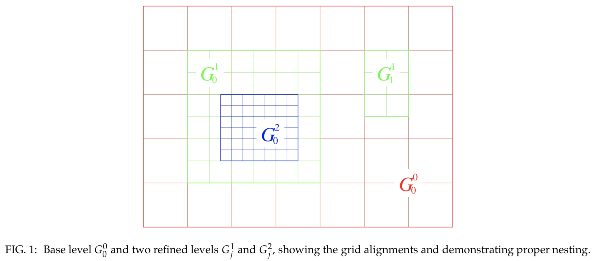
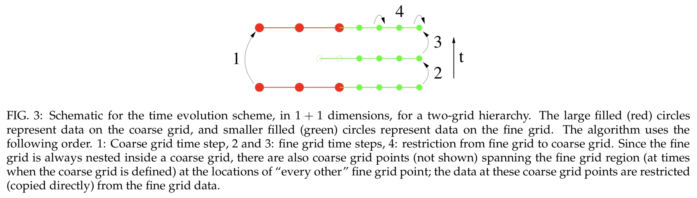
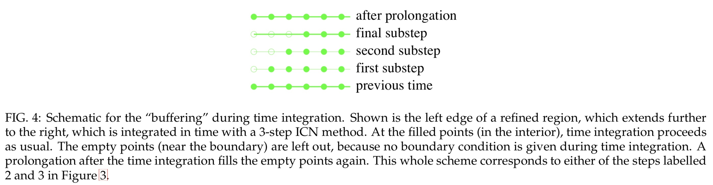
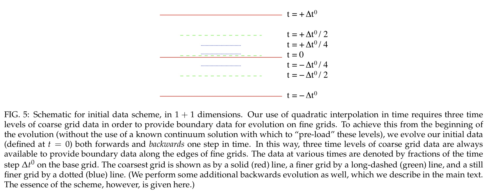

There are two major classes of techniques used for numerical simulations of the Einstein equations. These are finite-difference methods, typically coupled to adaptive mesh refinement techniques, and pseudo-spectral methods.
Note
Most of the finite difference codes are based on modifications to the ADM system. These equations are in a form with mixed second and first derivatives. Basically, the system is such that only first time derivatives occur, but first and second spatial derivatives occur. (Of course, auxiliary evolution variables can be introduced so that the system only has first spatial derivatives, but at the cost of introducing additional constraints.)
A black hole interior presents a major challenge to any numerical technique because of the curvature singularity it harbors. Fortunately, the singularity is concealed behind an event horizon. The region inside the horizon cannot affect the exterior solution, so numerical simulations need not evolve it accurately.
One way to do this is to simply not evolve a region inside the horizon, i.e., to excise this region. The other method, the puncture method involves allowing singularities in the computational domain. In the appropriate gauge, these singularities are sufficiently benign that finite difference methods can handle them.
Finite Difference Methods
In a finite difference approximation a function f(t,x) is represented by values at a discrete set of points. At the core of finite difference approximation is therefore a discretization of the spacetime, or a numerical grid. Instead of evaluating f at all values of x, for example, we only consider discrete values x_i. The distance between the gridpoints x_i is called the gridspacing ∆x. For uniform grids, for which ∆x is constant, we have
If the solution depends on time we also discretize the time coordinate, for example as
The finite difference representation of the function f(t,x), for example, is
Differential equations involve derivatives, so we must next discuss how to represent derivatives in a finite difference representation.
Assuming that f(x) can be differentiated to sufficiently high order and that it can be represented as a Taylor series, we have
Solving for \left( \partial _ { x } f \right) _ { x _ { i } } = \left( \partial _ { x } f \right) _ { i } we find
The truncation error of this expression is linear in ∆x, and it turns out that we can do better. We call equation a one-sided derivative, since it uses only neighbors on one side of x_i.
Consider the Taylor expansion to the point x_{ i − 1 },
we now find
which is second order in ∆x. In general, centered derivatives lead to higher order schemes than one-sided derivatives for the same number of gridpoints.
The key point is that we are able to combine the two Taylor expansions in such a way that the leading order error term cancels out, leaving us with a higher order representation of the derivative. This cancellation only works out for uniform grids, when ∆x is independent of x. This is one of the reasons why many current numerical relativity applications of finite difference schemes work with uniform grids.
Higher order derivatives can be constructed in a similar fashion. Adding the two Taylor expansions all terms odd in ∆x drop out and we find for the second derivative
Fourth-order finite-difference
Fourth-order finite-difference representations of the first and second derivatives of a function f are given by
where we have omitted the truncation error, \mathcal { O } \left( \Delta x ^ { 4 } \right)
Elliptic Equations
As an example of a simple, one-dimensional elliptic equation consider
We first have to construct a numerical grid that covers an interval between x_{min} and x_{max}. We then divide the interval \left[x_{\min }, x_{\max }\right] into N gridcells, leading to a gridspacing of
We can choose our grid points to be located either at the center of these cells, which would be referred to as a cell-centered grid, or on the vertices, which would be referred to as a vertex-centered grid. For a cell-centered grid we have N grid points located at

whereas for a vertex centered grid we have N + 1 gridpoints located a
The difference between cell-centered and vertex-centered grids only affects the implementation of boundary conditions, but not the finite difference representation of the differential equation itself.
We are now ready to finite difference the differential equation. We define two arrays, f_i and s_i, which represent the functions f and s at the gridpoints x_i for i = 1, . . . , N. In the interior of our domain we can represent the differential equation as
At the lower boundary point i = 1 the neighbor i − 1 does not exist in our domain, and, similarly, at the upper boundary point i = N the point i + 1 does not exist. At these points we have to implement the boundary conditions, which can be done in many different ways.
Let us assume that the solution f is a symmetric function about x = 0, in which case we can restrict the analysis to positive x and impose a Neuman condition at the origin,
The two grid points x_0 and x_1 then bracket the boundary point x_{min} = 0 symmetrically. We can then write the boundary condition as
For i = 1 we yields
We can use a similar strategy at the upper boundary. Let us also assume that f falls off with 1/x for large x, which results in the Robin boundary condition
With the help of a virtual grid point x_{N + 1} we can write the boundary condition in \Delta x as
We can again insert this into for i = N and find
Elliptic Equations now form a coupled set of N linear equations for the N elements f_i that we can write as
or, in a more compact form,
The solution is given by
so that we have reduced the problem to inverting an N × N matrix.
Hyperbolic Equations
For simplicity it does not contain any source terms, and the the wave speed v is constant.
The equation is satisfied exactly by any function of the form u ( t , x ) = u ( x - v t ). The equation has a time derivative in addition to the space derivative, and thus requires initial data.
Inserting both finite-difference representations
we can solve for u^{n+1}_j and find
or reasons that are quite obivous this differencing scheme is called forward-time centered-space, or FTCS.

It is an example of an explicit scheme, meaning that we can solve for the grid function u _ { j } ^ { n + 1 } at the new time level n + 1 directly in terms of function values on the old time level n.
Courant-Friedrichs-Lewy condition
Unfortunately, however, FTCS is fairly useless. The equation is satisfied exactly by any function of the form u ( t , x ) = u ( x - v t ). we can write the solution u ( t , x ) to our continuum hyperbolic differential equation as a superposition of eigenmodes e^{i(\omega t+k x)}. Here k is a spatial wave number.
A real \omega, for which e^{i \omega t} has a magnitude of unity, yields sinusoidally oscillating modes, while the existence of a complex piece in \omega leads to exponentially growing or damping modes. In the case of exponential growth, the magnitude of e^{i \omega t} will exceed unity.
We can perform a similar spectral analysis of the finite difference equation. Write the eigenmode for u_{j}^{n} as
Here the quantity \xi plays the role of e^{i \omega \Delta t} and is called the amplification factor:
For the scheme to be stable, the magnitude \xi must be smaller or equal to unity for all k,
To perform a von Neumann stability anaylsis of the FTCS scheme
the magnitude of \xi is greater than unity for all k, indicating that this scheme is unstable. In fact, we have |\xi|>1 independently of our choice for \Delta x and \Delta t, which makes this scheme unconditionally unstable. That is bad. The good news is that there are several ways of fixing this problem.
For example, we could replace the term u_{j}^{n} by the spatial average \left(u_{j+1}^{n}+u_{j-1}^{n}\right) / 2.
a von Neumann analysis results in the amplification factor
The von Neumann stability criterion then implies that we must have
The Courant condition states that the the grid point u _ { j } ^ { n + 1 } at the new time level n+1 has to reside inside the domain of determinacy of the interval spanned by the finite difference stencil at the time level n. This makes intuitive sense: if u _ { j } ^ { n + 1 } were outside this domain, its physical specification would require more information about the past than we are providing numerically, which may trigger an instability.

Recalling that v represents the speed of a characteristic, we may interpret the Courant condition in terms of the domain of determinacy.
It seems somewhat like a miracle that simply replacing a grid function by a local average manages to change the numerical scheme from unconditionally unstable to conditionally stable.
This change can be interpreted in very physical terms
or
But equation is a finite-difference representation of the differential equation
where the term on the right-hand side is essentially a diffusion term, with parameter D=(\Delta x)^{2} /(2 \Delta t) serving as a constant coefficient of diffusion.
This feature implies the amplitude of any wave will decrease spuriously with time as it propagates. A related effect is anomalous dispersion, an additional price we pay for stablity in the Lax scheme and many other finite-difference schemes for hyperbolic systems.
implicit scheme
Yet another way of constructing a stable two-level scheme is to use backward time differencing instead of forward differencing. This approach then yields the “backward-time, centered-space” scheme,

Performing a von Neumann stability analysis we find the amplification factor
for all values of \Delta t. This finding means that this scheme is unconditionally stable. The size of the stepsize ∆t is no longer restricted by stability, and instead is limited only by accuracy requirements. this property is even more important for parabolic equations.
The disadvantage of the backward differencing scheme is that we can no longer solve for the new grid function u_{j}^{n+1} at the new time t^{n+1} explicitly in terms of old grid functions at t^{n} alone. Instead, now couples u_{j}^{n+1} with the its closest neighbors u_{j+1}^{n+1} and u_{j-1}^{n+1}. This coupling provides an implicit linear relation between the new grid functions, and is therefore an example of an implicit finite-differencing scheme. We can no longer sweep through the grid and update one point at a time; instead we now have to solve for all grid points simultaneously. Writing equation at all interior grid points, and then taking into account the boundary conditions, leads to a system of equations quite similar to elliptic equations.
Method of Lines
A popular alternative to these complete finite difference schemes is therefore the method of lines (or MOL for short).
The basic idea of the method of lines is to finite difference the space derivatives only. Now we introduce a spatial grid only, at least for now, so that the function values at these gridpoint, u_{j}(t)=u\left(t, x_{j}\right), remain functions of time. As a result, our partial differential equation for u(t, x) becomes a set of ordinary differential equations for the grid values u_{j}(t). The next question is how to integrate the ordinary differential equations. The appealing feature of the method of lines, however, is that we can use any method for the integration of the ordinary differential equations that we like. In fact, many such methods, including very efficient, high-order methods, are precoded and readily available. One such algorithm is the ever-popular Runge-Kutta method.
To implement, say, a fourth-order scheme for our model
we could adopt the fourth-order differencing stencil to replace the spatial derivative, yielding
and then integrate this set of ordinary differential equations with a fourth-order Runge-Kutta method.
Runge-Kutta (RK) method
The explicit form of the algorithms is
- Prediction step (common for both RK2 and RK3):
-
Depending on the order do:
-
RK2:
- RK3:
Ghost Zones
Cactus is based upon a distributed computing paradigm. That is, the problem domain is split into blocks, each of which is assigned to a processor.
Consider the 1-D wave equation
To solve this by partial differences, one discretises the derivatives to get an equation relating the solution at different times.
On examination, you can see that to generate the data at the point (t+\Delta t, x) we need data from the four points (t, x), (t -\Delta t, x), (t, x + \Delta x) and (t, x- \Delta x) only.
Now, if you evolve the above scheme, it becomes apparent that at each iteration the number of grid points you can evolve decreases by one at each edge.
At the outer boundary of the physical domain, the data for the boundary point can be generated by the boundary conditions, however, at internal boundaries, the data has to be copied from the adjacent processor.
It would be inefficient to copy each point individually, so instead, a number of ghostzones are created at the internal boundaries. A ghostzone consists of a copy of the whole plane (in 3D, line in 2D, point in 1D) of the data from the adjacent processor.
Once the data has been evolved one step, the data in the ghostzones can be exchanged (or synchronised) between processors in one fell swoop before the next evolution step.
Mesh Refinement
It is often the case in simulations of physical systems that the most interesting phenomena may occur in only a subset of the computational domain. In the other regions of the domain it may be possible to use a less accurate approximation, thereby reducing the computational resources required, and still obtain results which are essentially similar to those obtained if no such reduction is made.
Note
Imagine, for concreteness, a simulation of a strong-field gravitational wave source, like a compact binary containing neutron stars or black holes. On the one hand we have to resolve these sources well, so as to minimize truncation error in the strong-field region. On the other hand, the grid must extend into the weak-field region at large distances from the sources, so as to minimize error from the outer boundaries and to enable us to extract the emitted gravitational radiation accurately.

In particular, we may consider using a computational mesh which is non-uniform in space and time, using a finer mesh resolution in the “interesting” regions where we expect it to be necessary, and using a coarser resolution in other areas. This is what we mean by mesh refinement (MR).
The mesh refinement driver that we use is called Carpet and is available together with the application framework Cactus. It uses the Berger–Oliger approach, where the computational domain as well as all refined subdomains consist of a set of rectangular grids. Furthermore, there is a constant refinement ratio between refinement levels. The basic idea underlying mesh refinement techniques is to perform the simulation not on one numerical grid, but on several, as in the multigrid methods.


notation
The grids are grouped into refinement levels (or simply “levels”) L^K, each containing an arbitrary number of grids G^{k}_{j}. Each grid on refinement level k has the grid spacing (in one dimension) \Delta x^{k}. The grid spacings are related by the relation \Delta x^{k}=\Delta x^{k-1} / N_{\text { refine }} with the integer refinement factor N_{\text { refine }}. The base level L^0 covers the entire domain (typically with a single grid) using a coarse grid spacing. The refined grids have to be properly nested. That is, any grid G^{k}_{j} must be completely contained within the set of grids L^{k-1} of the next coarser level, except possibly at the outer boundaries.
The times and places where refined grids are created and removed are decided by some refinement criterion. The simplest criterion, which is also indispensable for testing, is manually specifying the locations of the refined grids at fixed locations in space at all times. This is called fixed mesh refinement. A bit more involved is keeping the same refinement hierarchy, but moving the finer grids according to some knowledge about the simulated system, tracking some feature such as a black hole or a neutron star. This might be called “moving fixed mesh refinement”. Clearly the most desirable strategy is an automatic criterion that estimates the truncation error, and places the refined grids only when and where necessary. This is what is commonly understood by adaptive mesh refinement. Carpet supports all of the above in principle.
Note
The situation is more complicated for objects that are moving, as is the case for a coalescing binary star system. In this case we do not know a priori the trajectories of the companion stars, hence do not know which regions need refining. Moreover, these regions will be changing as the system evolves and the stars move. Clearly, we would like to move the refined grids with the stars. Such an approach, whereby the grid is relocated during the simulation to give optimal resolution at each time step, is called adaptive mesh refinement or AMR.
Time evolution scheme
In multigrid methods, the numerical solution is computed on a hierarchy of computational grids with increasing grid resolution. The finer grids may or may not cover all the physical space that is covered by the coarser grids. The numerical solution is then computed by completing sweeps through the grid hierarchy.
Prolongation
The coarse grid is sufficiently small so that we can compute a solution with a direct solver. This provides the “global” features of the solution, albeit on a coarse grid and hence with a large local truncation error. We then interpolate this approximate solution to the next finer grid. This interpolation from a coarser grid to a finer grid is called a “prolongation”.
In the mathematical field of numerical analysis, interpolation is a method of constructing new data points within the range of a discrete set of known data points.
AMR scheme evolves coarse grid data forward in time before evolving any data on the finer grids. These evolved coarse grid data can then be used to provide boundary conditions for the evolution of data on the finer grids via prolongation, i.e. interpolation in time and space.

A refinement by a factor of N_{\text { refine }} requires time step sizes that are smaller by a factor N_{\text { refine }}, and hence N_{\text { refine }} time steps on level k+1 are necessary for each time step on level k.
Restriction
At time steps in which the coarse and fine grids are both defined, the fine grid data are restricted onto the coarse grid (via a simple copy operation) after it has been evolved forward in time.

The coarser grids now “learn” from the finer grids by comparing their last solution with the one that comes back from a finer grid. This comparison provides an estimate for the local truncation error. These sweeps through the grid hierarchy can be repeated until the solution has converged to a pre-determined accuracy.
If there are more than two grid levels, then one proceeds recursively from coarsest to finest, evolving data on the coarsest grid first, interpolating this data in time and space along boundaries of finer grids, evolving the finer grid data, and restricting evolved data from finer to coarser grids whenever possible.
Note
For time evolution schemes that consist only of a single iteration (or step), the fine grid boundary condition needs to be applied only once. Most higher-order time integrations schemes, such as Runge-Kutta or iterative Crank-Nicholson, are actually multi-step schemes and correspondingly require the fine grid boundary condition to be applied multiple times. If this is not done in a consistent manner at each iteration, then the coarse and the fine grid time evolution will not couple correctly, and this can introduce a significant error.
There are several ways to guarantee consistent boundary conditions on fine grids. Our method use a larger fine grid boundary. That is, each of the integration substeps is formally applied to a progressively smaller domain, and the prolongation operation re-enlarges the domain back to its original size.

Note that this “buffering” is done only for prolongation boundaries; outer boundaries are handled in the conventional way. Note also that the use of buffer zones is potentially more computationally efficient. We emphasise that the use of these buffer zones is not always necessary. To our knowledge the buffer zones are necessary only when the system of equations contains second spatial derivatives, and a multi-step numerical method is used for time integration.
Inter-grid transport operators
As described above, the interaction between the individual refinement levels happens via prolongation and restriction. For prolongation, Carpet currently supports polynomial interpolation, up to quadratic interpolation in time, which requires keeping at least two previous time levels of data. It also supports up to quintic interpolation in space, which requires using at least three ghost zones. We usually use cubic interpolation in space, which requires only two ghost zones. For restricting, Carpet currently uses sampling (i.e., a simple copy operation). These transport operators are not conservative. Since our formulation of Einstein’s equation is not in a conservative form, any use of conservative inter-grid operations offers no benefit. However, the transport operators can easily be changed.
Initial data generation
Initial data generation and time evolution are controlled by the driver Carpet. Initial data are created recursively, starting on the coarsest level L^{0}.
In many cases, the initial data specification is only valid for a single time t=0. However, for the time interpolation necessary during prolongation, it may be necessary to have data on several time levels. One solution is to use only lower order interpolation during the first few time steps. We decided instead, we offer the option to evolve coarse grid data backwards in time in order to provide sufficient time levels for higher order interpolation in time at fine grid boundaries.
This initial data generation proceeds in two stages.
First the data are evolved both forwards and backwards in time one step, leading to the “hourglass” structure.

This evolution proceeds recursively from coarsest to finest, so that all data necessary for time interpolation are present. Note that this would not be the case if we evolved two steps backwards in time, as there would not be enough data for the time interpolation for the restriction operation between these two steps.
Pseudo-spectral methods
In spectral methods the evolved fields are expressed in terms of a finite sum of basis functions. An example of this would be to describe a field on a sphere in terms of an expansion in spherical harmonics. These methods have the advantage that if the fields are smooth then the error in truncating the expansion converges to zero exponentially with the number of basis functions used in the expansion.